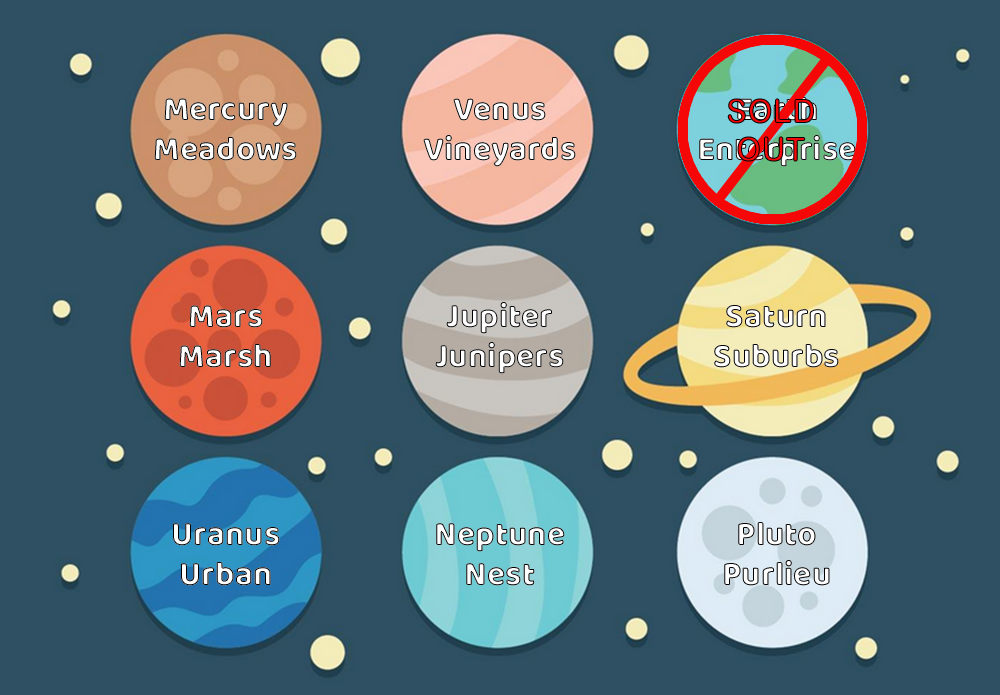

We are building all over!! Check out some of our developments right in your solar system!!

Residential Projects
We have numerous residential projects right in your own back yard. Eight of the nine planets that make up your solar system have open lots that are available! Great quality construction that far surpasses all Intergalactic Building Codes (IBC). All homes are custom designed for your tastes and needs, and are built for their appropriate atmosphere! Our developments have safety and clean living in mind! All communities provide state-of-the-art transportation, media technology, shopping, saucer and rocket ports, parks hospitals, and all other public service buildings. All are pet friendly too! We have a few 300+ Senior Living communities as well! So grab your stake and contact us as soon as humanly possible (we understand that you humans are slower than most).
Our Available Family Friendly Residential Developments:
- Mercury
- Venus Vineyards
- Earth Enterprise SOLD OUT!
- Mars Marsh
- Jupiter Junipers
- Saturn Suburbs
- Uranus Urban
- Neptune Nest
- Pluto Purlieu
City Living Action!
If you love the hustle and bustle of the city live, we have some great opportunities for you! Uranus Urban is just breaking ground, but contracts are coming in fast! Venus Vineyards is a very sophisticated suburbs with a lot of activity and in close proximity to New Venus City, the city that never sleeps! Contact us for more information and don't miss an opportunity to get in on all the action, great dining, intergalactic entertainment, and much more!
Country Roads Take Me Home!
If your idea of a perfect place to come home to is a quiet, relaxing home in the country, well we have some wonderful options for you! Mercury Meadows is a client favorite, with warm weather all year round! But it is a small planet and we are reaching our final phase, so hurry up if you are interested!. If you are more of a snow bunny, then Neptune Nest might be just the place your are looking for!
Great schools!
Alien education is at the top of our priority list. All of our communities have their own private schools that cater to each individual alien child, whatever its species. The education surpasses any intergalactic standards. Special attention is placed on physical fitness, mind fitness, sports, arts, and languages. Daycare centers are available as well. Alien children in our communities love to go to school!
Family Fun for the Young and Old!
We are very proud of our commitment to make sure that all our communities are very family and pet friendly, with ample parks, street lighting, safe walkways, and dedicated hover board paths. Family nights are the best and a favorite is the practice of an ancient earthling tradition of Trick-or-Treat!
We Build Cities Too!
Don't forget our commercial sector! We are very proud of our retail, institutional, hospitality, industrial, and multi-family buildings! Our projects won many awards and on some planets, we built every structure of every city! All deadlines are (almost) always kept as promised! So if you have a new commercial project in mind, give us a buzz!